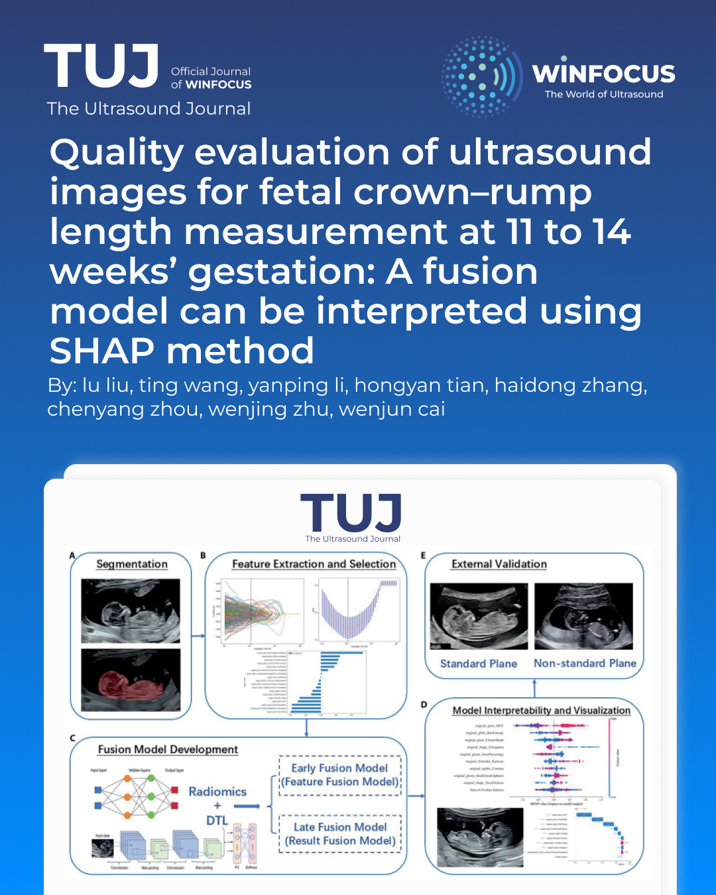

Quality evaluation of ultrasound images for fetal crown–rump length measurement at 11 to 14 weeks’ gestation: A fusion model can be interpreted using SHAP method
Keywords:
Deep learning, Quality evaluation, Ultrasound standard plane, Crown–rump length, SHAPAbstract
Objectives: To explore a fusion model designed for the quality evaluation of ultrasound images utilized in fetal crown–rump length (CRL) measurement, and to use SHapley Additive exPlanations (SHAP) method to elucidate the model's decision-making processes.
Methods: We retrospectively collected 1149 images of midsagittal planes of the entire fetus during early pregnancy from two hospitals. Two senior radiologists categorized the images into standard and non-standard planes. Seven image segmentation models were trained to select the best model for automatically segmenting the region of interest. The radiomics features and deep transfer learning (DTL) features were extracted and selected to establish radiomics models and DTL models. We also constructed fusion models to enhance the classification performance and the optimal one underwent comparison with radiologists. The SHAP method was employed to interpret and visualize the model.
Results: The DeepLabV3 ResNet101 segmentation model demonstrated the highest performance (DSC: 97.15%). The early fusion model exhibited superior classification performance in validation set (AUC: 0.947, 95% CI: 0.924-0.970, accuracy: 88.4%, sensitivity: 83.0%, specificity: 92.7%, PPV: 90.1%, NPV: 87.3%, precision: 90.1%). The model demonstrated performance commensurate with that of senior radiologists while surpassing junior radiologists. Notably, when leveraging the model's support, there was a substantial improvement in their overall performance.
Conclusions: The early fusion model demonstrated satisfactory performance in the intelligent quality evaluation of ultrasound images for CRL measurement. It has the potential to enhance the professional skills of junior radiologists.
References
1. Salomon LJ, Alfirevic Z, Bilardo CM, Chalouhi GE, Ghi T, Kagan KO, et al. ISUOG practice guidelines: performance of first-trimester fetal ultrasound scan. Ultrasound Obstet Gynecol. 2013;41(1):102-13. doi: 10.1002/uog.12342 PMID: 23280739.
2. Bilardo C M, Chaoui R, Hyett J A, Kagan KO, Karim JN, Papageorghiou AT, et al. ISUOG Practice Guidelines (updated): performance of 11-14-week ultrasound scan. Ultrasound Obstet Gynecol. 2023;61(1):127-143. doi: 10.1002/uog.26106 PMID: 36594739.
3. Salomon L J, Alfirevic Z, Da Silva Costa F, Deter RL, Figueras F, Ghi T, et al. ISUOG Practice Guidelines: ultrasound assessment of fetal biometry and growth. Ultrasound Obstet Gynecol. 2019;53(6):715-723. doi: 10.1002/uog.20272 PMID: 31169958.
4. Papageorghiou A T, Kennedy S H, Salomon L J, Ohuma EO, Cheikh Ismail L, Barros FC, et al. International standards for early fetal size and pregnancy dating based on ultrasound measurement of crown-rump length in the first trimester of pregnancy. Ultrasound Obstet Gynecol. 2014;44(6):641-8. doi: 10.1002/uog.13448 PMID: 25044000; PMCID: PMC4286014.
5. Wanyonyi S Z, Napolitano R, Ohuma E O, Salomon LJ, Papageorghiou AT. Image-scoring system for crown-rump length measurement. Ultrasound Obstet Gynecol. 2014;44(6):649-54. doi: 10.1002/uog.13376 PMID: 24677327.
6. Ramirez Zegarra R, Ghi T. Use of artificial intelligence and deep learning in fetal ultrasound imaging. Ultrasound Obstet Gynecol. 2023;62(2):185-194. doi: 10.1002/uog.26130 PMID: 36436205.
7. Fiorentino M C, Villani F P, Di Cosmo M, Frontoni E, Moccia S. A review on deep-learning algorithms for fetal ultrasound-image analysis. Med Image Anal. 2023;83:102629. doi: 10.1016/j.media.2022.102629 PMID: 36308861.
8. Shazly S A, Trabuco E C, Ngufor C G, Famuyide AO. Introduction to Machine Learning in Obstetrics and Gynecology. Obstet Gynecol. 2022;139(4):669-679. doi: 10.1097/AOG.0000000000004706 PMID: 35272300.
9. Wang Y, Lang J, Zuo J Z, Dong Y, Hu Z, Xu X, et al. The radiomic-clinical model using the SHAP method for assessing the treatment response of whole-brain radiotherapy: a multicentric study. Eur Radiol. 2022;32(12):8737-8747. doi: 10.1007/s00330-022-08887-0 PMID: 35678859.
10. Rodríguez-Pérez R, Bajorath J. Interpretation of Compound Activity Predictions from Complex Machine Learning Models Using Local Approximations and Shapley Values. J Med Chem. 2020;63(16):8761-8777. doi: 10.1021/acs.jmedchem.9b01101 PMID: 31512867.
11. Zhao S, Wang J, Jin C, Zhang X, Xue C, Zhou R, et al. Stacking Ensemble Learning-Based [18F]FDG PET Radiomics for Outcome Prediction in Diffuse Large B-Cell Lymphoma. J Nucl Med. 2023;64(10):1603-1609. doi: 10.2967/jnumed.122.265244 PMID: 37500261.
12. Umans E, Dewilde K, Williams H, Deprest J, Van den Bosch T. Artificial Intelligence in Imaging in the First Trimester of Pregnancy: A Systematic Review. Fetal Diagn Ther. 2024;51(4):343-356. doi: 10.1159/000538243 PMID: 38493764; PMCID: PMC11318576.
13. Sciortino G, Tegolo D, Valenti C. Automatic detection and measurement of nuchal translucency. Comput Biol Med. 2017;82:12-20. doi: 10.1016/j.compbiomed.2017.01.008 PMID: 28126630.
14. Zhen C, Wang H, Cheng J, Yang X, Chen C, Hu X, et al. Locating Multiple Standard Planes in First-Trimester Ultrasound Videos via the Detection and Scoring of Key Anatomical Structures. Ultrasound Med Biol. 2023;49(9):2006-2016. doi: 10.1016/j.ultrasmedbio.2023.05.005 PMID: 37291008.
15. Tsai P Y, Hung C H, Chen C Y, Sun YN. Automatic Fetal Middle Sagittal Plane Detection in Ultrasound Using Generative Adversarial Network. Diagnostics (Basel). 2020;11(1):21. doi: 10.3390/diagnostics11010021 PMID: 33374307; PMCID: PMC7824131.
16. Nie S, Yu J, Chen P, et al. Automatic Detection of Standard Sagittal Plane in the First Trimester of Pregnancy Using 3-D Ultrasound Data. Ultrasound Med Biol, 2017,43(1):286-300. doi: 10.1016/j.ultrasmedbio.2016.08.034 PMID: 27810260.
17. Ji C, Liu K, Yang X, et al. A novel artificial intelligence model for fetal facial profile marker measurement during the first trimester. BMC Pregnancy Childbirth, 2023,23(1):718. doi: 10.1186/s12884-023-06046-x PMID: 37817098; PMCID: PMC10563312.
18. Sun Y, Zhang L, Dong D, et al. Application of an individualized nomogram in first-trimester screening for trisomy 21. Ultrasound Obstet Gynecol, 2021,58(1):56-66. doi: 10.1002/uog.22087 PMID: 32438493; PMCID: PMC8362158.
19. Zhang L, Dong D, Sun Y, et al. Development and Validation of a Deep Learning Model to Screen for Trisomy 21 During the First Trimester From Nuchal Ultrasonographic Images. JAMA Netw Open, 2022,5(6):e2217854. doi: 10.1001/jamanetworkopen.2022.17854 PMID: 35727579; PMCID: PMC9214589.
20. Walker M C, Willner I, Miguel O X, et al. Using deep-learning in fetal ultrasound analysis for diagnosis of cystic hygroma in the first trimester. PLoS One, 2022,17(6):e269323. doi: 10.1371/journal.pone.0269323 PMID: 35731736; PMCID: PMC9216531.
21. Lin Q, Zhou Y, Shi S, et al. How much can AI see in early pregnancy: A multi-center study of fetus head characterization in week 10-14 in ultrasound using deep learning. Comput Methods Programs Biomed, 2022,226:107170. doi: 10.1016/j.cmpb.2022.107170 PMID: 36272307.
22. Xue H, Yu W, Liu Z, et al. Early Pregnancy Fetal Facial Ultrasound Standard Plane-Assisted Recognition Algorithm. J Ultrasound Med, 2023,42(8):1859-1880. doi: 10.1002/jum.16209 PMID: 36896480.
23. Drukker L, Noble J A, Papageorghiou A T. Introduction to artificial intelligence in ultrasound imaging in obstetrics and gynecology. Ultrasound Obstet Gynecol, 2020,56(4):498-505. doi: 10.1002/uog.22122 PMID: 32530098; PMCID: PMC7702141.
24. Xu J, Chen T, Fang X, et al. Prediction model of pressure injury occurrence in diabetic patients during ICU hospitalization--XGBoost machine learning model can be interpreted based on SHAP. Intensive Crit Care Nurs. 2024 Aug;83:103715. doi: 10.1016/j.iccn.2024.103715 PMID: 38701634.
25. Fu Q, Wu Y, Zhu M, et al. Identifying cardiovascular disease risk in the U.S. population using environmental volatile organic compounds exposure: A machine learning predictive model based on the SHAP methodology. Ecotoxicol Environ Saf, 2024 Nov 1;286:117210. doi: 10.1016/j.ecoenv.2024.117210 PMID: 39447292.
26. He F, Wang Y, Xiu Y, et al. Artificial Intelligence in Prenatal Ultrasound Diagnosis. Front Med (Lausanne). 2021 Dec 16;8:729978. doi: 10.3389/fmed.2021.729978 PMID: 34977053; PMCID: PMC8716504.
27. Espinoza J, Good S, Russell E, et al. Does the use of automated fetal biometry improve clinical work flow efficiency? J Ultrasound Med. 2013 May;32(5):847-50. doi: 10.7863/ultra.32.5.847 PMID: 23620327.
28. Yazdi B, Zanker P, Wanger P, et al. Optimal caliper-placement: manual vs automated methods. Ultrasound Obstet Gynecol. 2014 Feb;43(2):170-5. doi: 10.1002/uog.12509 PMID: 23671025.
29. Subbaswamy A, Saria S. From development to deployment: dataset shift, causality, and shift-stable models in health AI. Biostatistics. 2020 Apr 1;21(2):345-352. doi: 10.1093/biostatistics/kxz041 PMID: 31742354.
30. Challen R, Denny J, Pitt M, et al. Artificial intelligence, bias and clinical safety. BMJ Qual Saf. 2019 Mar;28(3):231-237. doi: 10.1136/bmjqs-2018-008370 PMID: 30636200; PMCID: PMC6560460.

Downloads
Additional Files
Published
Issue
Section
License
Copyright (c) 2026 Lu Liu, Ting Wang, Yanping Li, Hongyan Tian, Haidong Zhang, Chenyang Zhou, Wenjing Zhu, Wenjun Cai (Author)

This work is licensed under a Creative Commons Attribution-NonCommercial 4.0 International License.
This is an Open Access article distributed under the terms of the Creative Commons Attribution License (https://creativecommons.org/licenses/by-nc/4.0) which permits unrestricted use, distribution, and reproduction in any medium, provided the original work is properly cited.
Authors retain the copyright for their published work. No formal permission will be required to reproduce parts (tables or illustrations) of published papers, provided the source is quoted appropriately and reproduction has no commercial intent.
How to Cite